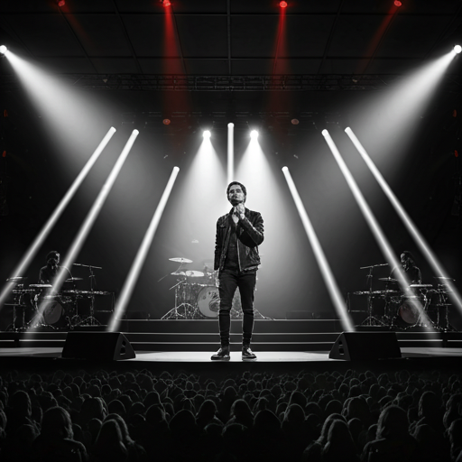
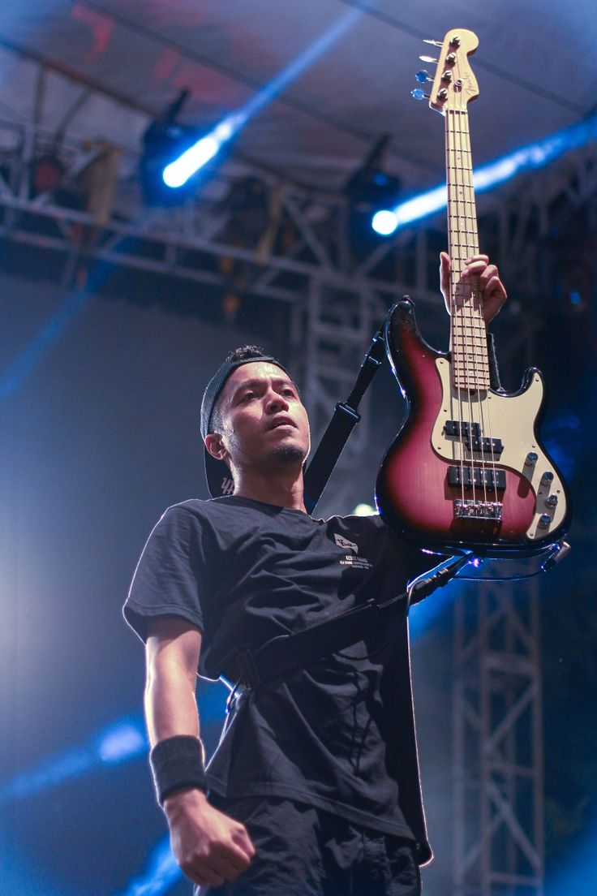
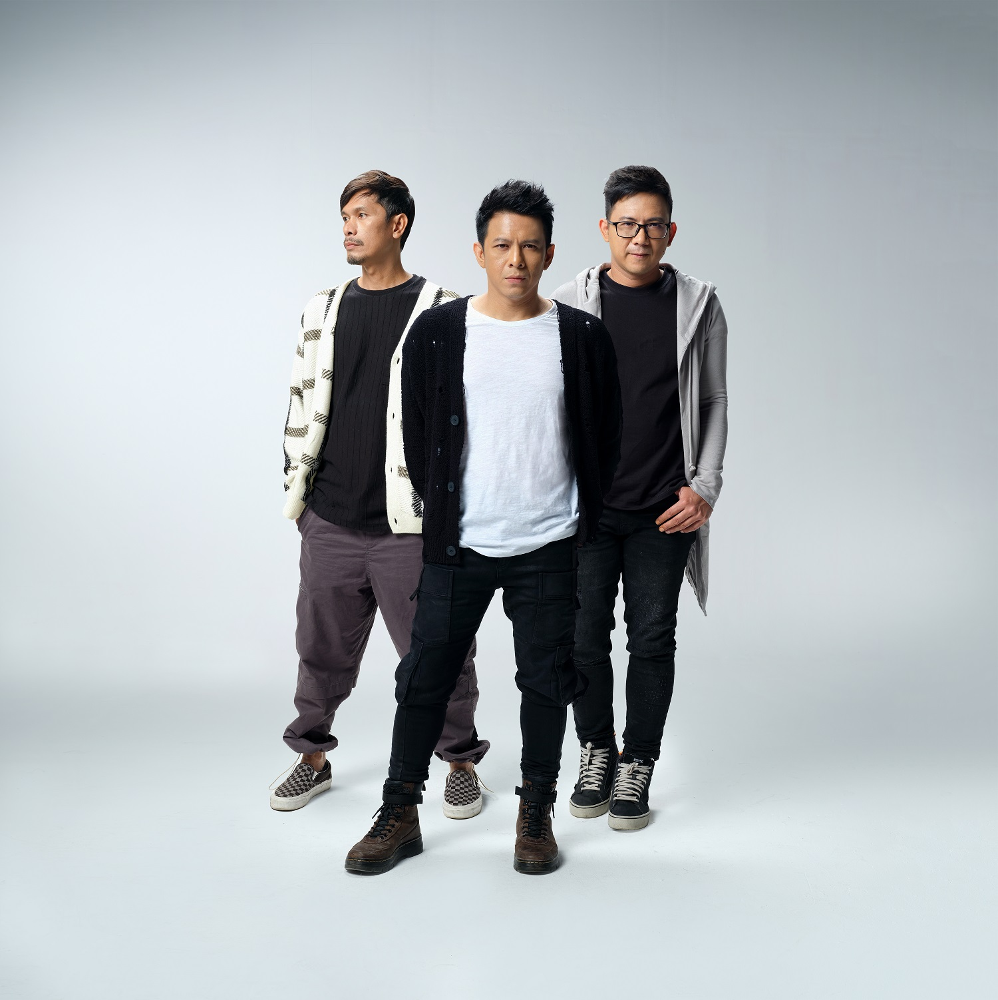

Dari Peterpan ke NOAH: Perjalanan Band Rock Terlaris Indonesia yang mendefinisikan ulang musik pop-rock tanah air.
Berawal dari panggung kecil sekolah di Bandung, perjalanan NOAH adalah narasi tentang ketekunan, evolusi, dan dedikasi tanpa henti pada karya seni. Sebelum dikenal sebagai raksasa industri musik Indonesia, benih kreativitas ini muncul dari grup bernama 'Topi', sebuah band sekolah yang menjadi pondasi.
Dengan penjualan lebih dari 9 juta keping album, transisi dari Peterpan menjadi NOAH bukan sekadar pergantian nama, melainkan sebuah re-inkarnasi artistik. Band ini telah melewati berbagai pasang surut industri, namun tetap menjaga otentisitas musik yang hangat dan lirik yang menyentuh jiwa jutaan penggemar.

Cikal bakal NOAH yang dibentuk di Bandung, mengawali perjalanan dari kafe ke kafe.
Resmi menggunakan nama Peterpan dan mulai merekam demo yang mengubah industri musik.
Album fenomenal yang terjual lebih dari 3.2 juta keping, salah satu terlaris sepanjang masa.
Kembali dengan nama NOAH dan merilis 'Seperti Seharusnya', membuktikan kekuatan mereka.
Mengambil waktu sejenak untuk persiapan karya yang lebih monumental di masa depan.
Anggota Aktif
Vokal / Frontman
Sang visioner dan penulis lirik utama yang suaranya telah menjadi lagu tema bagi jutaan orang.

Gitar
Arsitek melodi gitar yang memberikan nuansa atmosferik khas pada setiap lagu NOAH.

Keyboard
Master harmonisasi yang membawa sentuhan modern lewat permainan keyboard yang elegan.
AMI Awards
MTV Asia
Asia Song Fest
MURI Records
Album Terjual
Nickelodeon
Akar & Inspirasi
Sang Evolusi
Musik NOAH telah berevolusi dari rock alternatif mentah di akhir 90-an menjadi suara yang lebih dipoles dan kaya akan nuansa elektronik. Pengaruh dari band arena rock global diterjemahkan ke dalam rasa lokal yang unik.